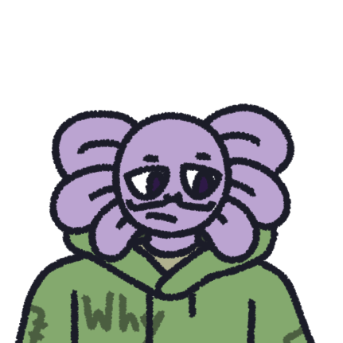

Renge The Axolotl

Renge The Axolotl
Renge is a Toon Universe OC created by Zuckern
- Extractor/Hacker
- He/Him
- Axolotl Gamer
Character Build
- Speed - 2
- Sanity - 1
- Stamina - 3
- Extraction 5
- Hacking - 5
- Total - 16
Ability: Who doesn't love a challenge?
When on an objective force a skill check to appear, will not activate if a skill check is already happening or is currently being chased by an infected.
Cooldown of 50
Passive: Better be perfect!
Perfect Skill checks give an additional 2% for every objective completed by the agent capping out at 20% total additional completion (Adding a max of 10%). This Addition completion percentage is reset to 0 whenever sanity reaches zero, and the max possible addition from the passive is decreased by 1% for every agent other than the user alive in the round
Axolotl Emblem
Decreases great and good skill check value while increasing perfect check value
Character Info
Hardcore gamer who loves to make things harder for himself, while also putting in minimal effort. He has a sort of elitist attitude, purely because of how competitive he is about doing objectives as fast as possible. But also because that elitism acts an emotional barrier from him having to connecting with the other agents due to the frankly very real fear of losing all of them, but outside of agent stuff, he loves most games but has an affinity to puzzle games and rhythm games, and likes Jpop music.